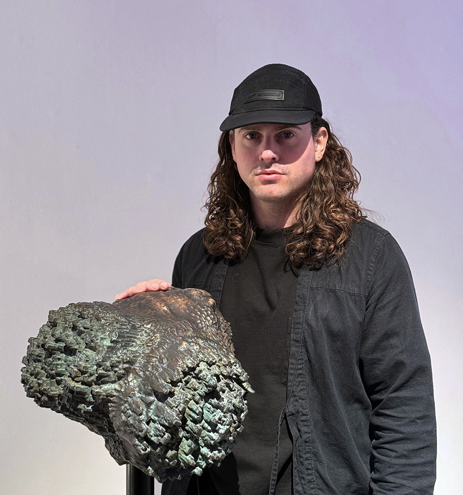

Max Čelar


Artist | Designer | Technologist
Co-founder of:
- Untold Garden - Art, design & research collective
- Untold Systems - Creative technology studio
- Meadow - Social platform for building, publishing & distributing immersive content
Biography
Max Čelar is an artist, designer and technologist based in London, working at the intersection of immersive
technology, participatory art and the spatial conditions of contemporary urban life. Born in Ljubljana,
Slovenia, he began his artistic training at the High School of Fine Arts before moving to London in 2013 to
study at the Architectural Association School of Architecture. His research there focused on decentralised
decision-making in architecture and urban planning, and on the role of immersive and AI technologies in
reshaping the city.
After graduating, Max worked as an XR Designer and Developer at ScanLAB Projects, where he contributed to a number of
Innovate UK-funded projects, including the acclaimed Framerate. He has held visiting lecturer positions at the
Royal College of Art and Royal Holloway, University of London, teaching Immersive Environment Design and
Virtual Reality Development, and continues to contribute to academic discourse on spatial computing,
participatory media and the ethics of emerging technologies.
In 2021, Max co-founded Untold Garden, an internationally exhibited art and design studio creating participatory works
that reposition the audience as co-author rather than spectator. Untold Garden's projects - spanning physical
installations, virtual sculptures, interactive performances and experimental social networks - have been
presented at the Nobel Prize Museum, BFI London Film Festival, CPH:DOX, Screen City Biennial, STRP Festival,
the British Art Fair and Språkmuseet, among others. The studio's practice draws on machine learning, networked
infrastructures and speculative ecologies to ask how technology might catalyse, rather than mediate away, our
relationships with one another and with our environments.
Alongside Untold Garden, Max co-founded Meadow, a platform for publishing and distributing augmented reality
experiences in public space, supported by UCL and used by institutions including the British Film Institute,
the Natural History Museum and the British Art Fair. He is currently leading the development of Meadow Studio,
a new agentic worldbuilding engine launching in summer 2026, which extends Meadow's tools toward AI-assisted
authorship of immersive worlds.
Max's work moves fluidly between gallery, public space and software, treating each as a site for rethinking
how we inhabit hybrid physical-digital environments. Through his practice, teaching and platform-building, he
continues to argue for a spatial computing shaped by artists, researchers and the communities who live with it.